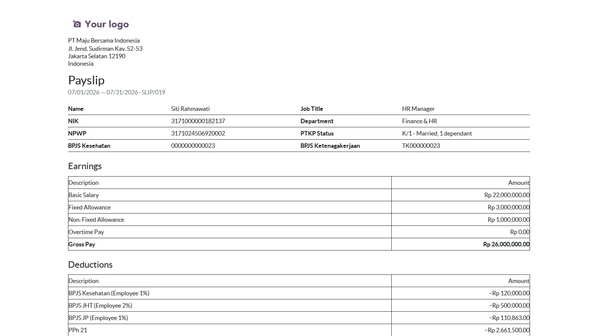
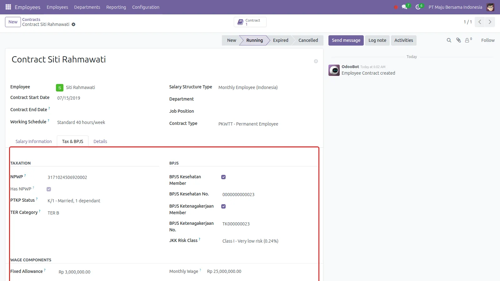
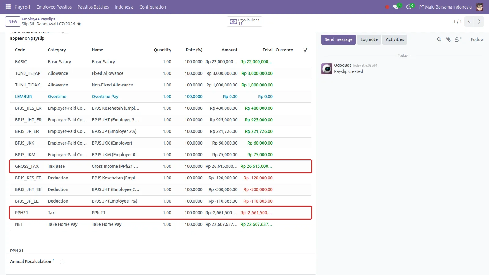
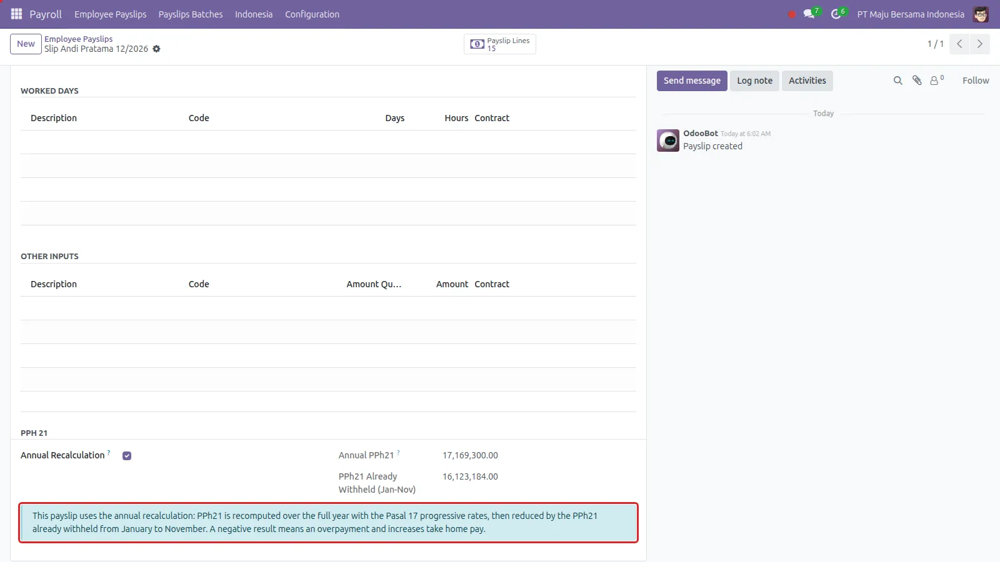
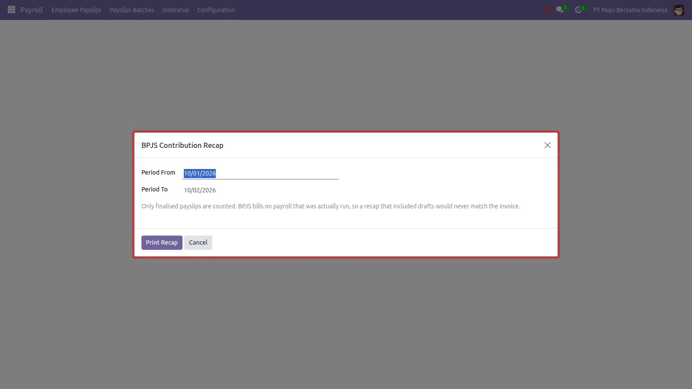
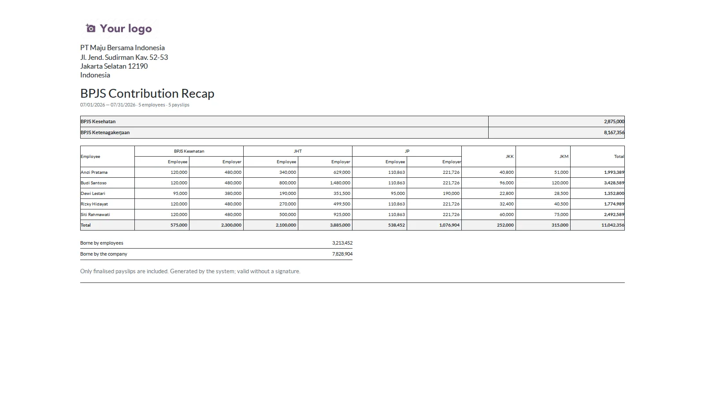
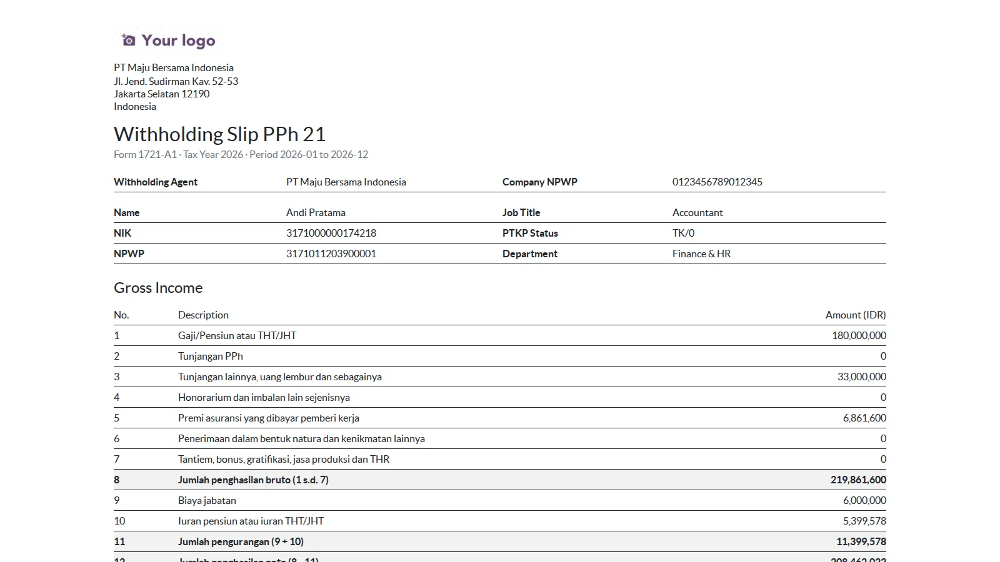
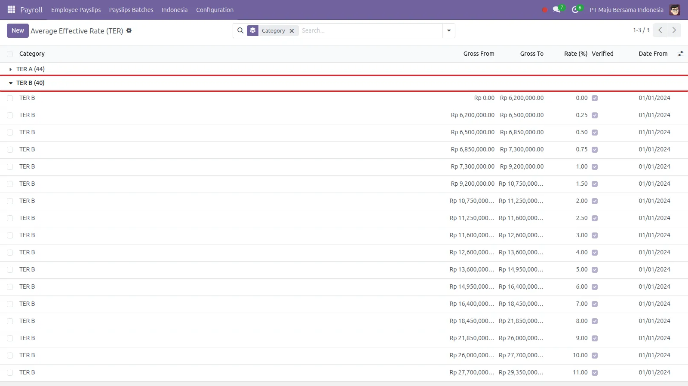
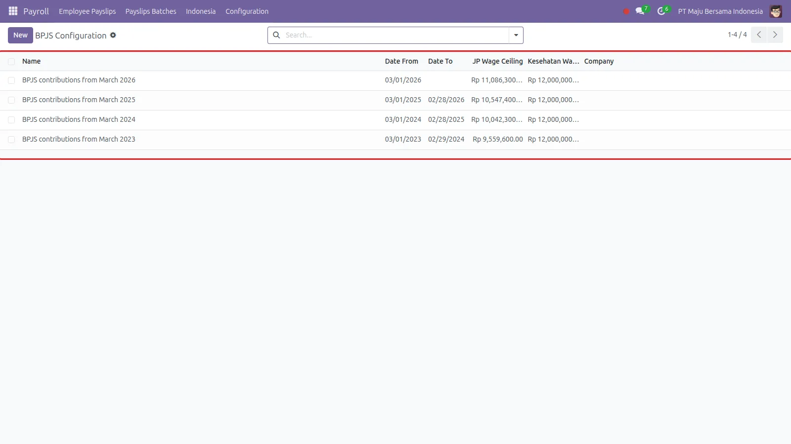

Indonesia Payroll - PPh 21 TER, BPJS, THR
Indonesian payroll on Odoo Community: PPh 21 TER with December recalculation, BPJS, overtime, THR, PKWT compensation and the 1721-A1.
- Price
- $199
- Odoo versions
- 18.0
- Technical name
tamadoo_payroll_id- License
- OPL-1

Text and screenshots below are from the Odoo 18.0 version of this module.
PPh 21 with the TER method and the December recalculation, BPJS, overtime, THR and the 1721-A1 — for Odoo Community, on the free OCA Payroll engine.

What you get
PPh 21 TER + December
Monthly TER A/B/C, then the whole year recalculated with Pasal 17 in December — refunds included.
Verified tables
All 125 TER brackets cross-checked against several publications of the PMK 168/2023 Lampiran.
BPJS done right
Kesehatan, JHT, JP with each year's JP cap, JKK by risk class, JKM — dated, so old payslips stay correct.
Reports HR files
Payslip, BPJS recap, Bukti Potong 1721-A1 and a payroll CSV for the bank.
What is calculated
| Item | Rule |
|---|---|
| PPh 21 Jan–Nov | TER A / B / C × monthly gross (PMK 168/2023) |
| PPh 21 December / last month | Pasal 17 on the year − biaya jabatan − JHT/JP − PTKP, minus Jan–Nov |
| Without NPWP | +20% |
| BPJS Kesehatan | 4% company + 1% employee, cap 12 million |
| JHT · JP | 3.7% + 2% · 2% + 1% (dated JP cap, 11,086,300 from Mar 2026) |
| JKK · JKM | 0.24–1.74% by risk class · 0.30% |
| Overtime | 1/173 × (basic + fixed allowance) × validated hours |
| THR · PKWT compensation | 1 month after 12 months, prorated · months / 12 × wage |
| Prolonged sick leave | 100 / 75 / 50 / 25% per 4 months (Pasal 93) |
Step by step
1. Indonesian data on the contract
NPWP, PTKP status (from marital status and children), TER category, BPJS numbers, allowances.

2. Monthly payslip with TER
Gross for tax includes employer-paid Kesehatan, JKK and JKM; PPh 21 = TER rate × gross.

3. December: the year is recalculated
Annual PPh 21 with Pasal 17, minus what was withheld January–November.

4. The payslip employees receive

5. BPJS recap every month


6. Bukti Potong 1721-A1 every year
Built from the same computation as the December payslip, so the two always agree.

7. Every rate is a dated record
Payroll → Configuration → Indonesia.


Requirements & notes
- Odoo 18.0 with the free OCA Payroll module (
payroll, github.com/OCA/payroll). - Add the new BPJS configuration each March when the JP wage cap changes.
- PKWTT severance (pesangon / UPMK) is not included.
- Review payroll results with your accountant; regulations change.
Get Indonesia Payroll
Questions before buying? Write to tama.odoo@gmail.com.